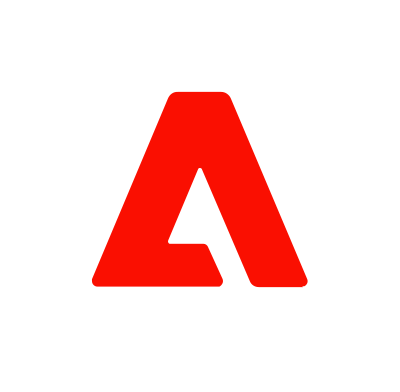

I'm a senior to principal-level designer who thinks in systems
I'm building an AI-enabled mobile platform that explores the relationships between customer and business.
Hi, I'm Dante.
Get to know me. Let's chat!
So, what's your name?
press Enter ↵
Selected cases
Teamshares
Payroll reporting
Saving Teamshares ~$3.1M annually without adding or subtracting headcount.
Teamshares
A hiring engine for a company of companies
Reframing a recruiting tool into talent pipeline infrastructure for 90+ acquired businesses.

Marketo / Adobe
The design system that survived an acquisition
Built Sky's design system from the ground up. Patterns contributed upstream to Adobe Spectrum.
Meroxa
Pivoting from a builder to a data observability platform
How a discovery in research forced a pivot that opened doors for Meroxa.
Am I a fit?
Paste a job description or URL and let's see how we match up.
0 / 5000